During the period 1975-1977, in addition to the Workmate models made in the UK and Canada, a third lineup of three models was made in Japan to be sold in Australia, New Zealand, and Japan (and possibly other countries). These were designated the J6910, J6904, and J6900. The image at left from the 1976 Japanese Black & Decker General Catalog shows the J6910.
In 1975, Black & Decker's global operations had three geographical divisions referred to as U.S. Power Tools, European International, and Pacific International. The European International division, based in the UK, introduced the first line of Black & Decker Workmates in 1972 after buying the rights from UK inventor Ron Hickman. Within the U.S. Power Tools division, the operation in Brockville, Ontario, Canada developed its own distinct line of Workmates starting in 1974 for the United States, Canada and other countries.
In 1975, the Pacific International division (whose headquarters at the time were also located in Brockville, Ontario) authorized the manufacture of a third line of Workmates in Japan for the Pacific region. There is evidence that these were sold in Australia, New Zealand, and Japan, and they may also have been sold in some of the other eight countries that were initially part of Pacific International: Brazil, Mexico, Panama, Philippines, Puerto Rico, Singapore, South Africa, and Venezuela. With the tremendous success of the Workmate elsewhere, they probably hoped for similar results in the Pacific. Unfortunately, the Japanese subsidiary lost money in all but two years that it operated, and Black & Decker shut down the Japanese facility completely in 1981.
The Pacific International models—J6910, J6904, and J6900—were sold for only a few years before they were replaced in the Pacific region by models imported from North America and the UK. It could be that the demand was not sufficient to justify operating a separate manufacturing plant.
Most of the timeline I have been able to find on these is from vintage advertisements in newspapers from Australia and New Zealand. The earliest advertisement I have found for them is from November 1975. By 1978, ads showed the Pacific International models on closeout while ads for other Workmate models from the U.S. and UK began appearing there. I have Black & Decker sales brochures from both Australia and Japan on my Documents page promoting the J6910 in 1975-76. I also have an Australian brochure showing the switch to marketing the North American 79-001, 79-008, and WM2000 by about that same time.
Black & Decker Workmates for Australia and Japan--
J6910, J6904, and J6900
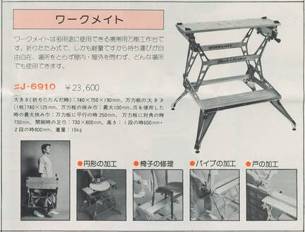
Workmate J6910 in B&D Japan catalogWorkmate J6910

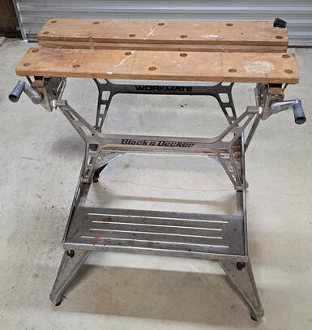
The J6910 was the full-size model in the Pacific International lineup, the same size as the North American model 79-001. In fact, the J6910 is almost a clone of a 79-001 Type 2 from early 1975, with the 9-hole, 4-corner jaws and the fully plated steel frame. I have found vintage advertisements showing that it was sold in Japan, Australia, and New Zealand.
The first J6910 I saw was in photos I came across online in January 2020, near the start of my Workmate 79-001 documentation project. I mistook it for a 79-001 Type 2 and filed the photos away, with a note that the feet were wrong. In 2022 I was sent photos of another J6910 by an owner who had bought his Workmate new in Australia in the 1970's and now needed parts for it. Using info from my website, he had identified it as a 79-001. I looked at his photos fairly briefly and confirmed for him (mistakenly) that it was indeed a 79-001, but I expressed surprise that it had been sold in Australia. Eventually in early 2025 I was contacted by another owner in Australia with an eye for detail who said he also believed his was a 79-001 Type 2, "but there are a few oddities". His close examination found numerous parts that did not quite match my documentation of any 79-001. Over the course of a couple of weeks, he and I determined that virtually every part is slightly different in some way between the J6910 and the 79-001 Type 2, yet if you were to see them side by side from ten feet away, it would be hard initially to see a difference.
The similarity between the two models is so close that Black & Decker used photos of the 79-001 for a number of the illustrations in their owner's manual and sales brochure for the J6910. It appears that Black & Decker decided to re-engineer the 79-001 for manufacture in Japan, while retaining everything about the overall design. They probably sent an early 79-001 to Japan for the designers there to create a copy, allowing changes for Japanese manufacturing practices and industry standards, and perhaps even for incremental improvements.
If you aren't already familiar with it, it could be helpful to view my page about the 79-001 Type 2 to better understand the J6910. Here is a summary of some of the differences from the 79-001 that can be found throughout the J6910, starting with the two most visible differences.
The first J6910 I saw was in photos I came across online in January 2020, near the start of my Workmate 79-001 documentation project. I mistook it for a 79-001 Type 2 and filed the photos away, with a note that the feet were wrong. In 2022 I was sent photos of another J6910 by an owner who had bought his Workmate new in Australia in the 1970's and now needed parts for it. Using info from my website, he had identified it as a 79-001. I looked at his photos fairly briefly and confirmed for him (mistakenly) that it was indeed a 79-001, but I expressed surprise that it had been sold in Australia. Eventually in early 2025 I was contacted by another owner in Australia with an eye for detail who said he also believed his was a 79-001 Type 2, "but there are a few oddities". His close examination found numerous parts that did not quite match my documentation of any 79-001. Over the course of a couple of weeks, he and I determined that virtually every part is slightly different in some way between the J6910 and the 79-001 Type 2, yet if you were to see them side by side from ten feet away, it would be hard initially to see a difference.
The similarity between the two models is so close that Black & Decker used photos of the 79-001 for a number of the illustrations in their owner's manual and sales brochure for the J6910. It appears that Black & Decker decided to re-engineer the 79-001 for manufacture in Japan, while retaining everything about the overall design. They probably sent an early 79-001 to Japan for the designers there to create a copy, allowing changes for Japanese manufacturing practices and industry standards, and perhaps even for incremental improvements.
If you aren't already familiar with it, it could be helpful to view my page about the 79-001 Type 2 to better understand the J6910. Here is a summary of some of the differences from the 79-001 that can be found throughout the J6910, starting with the two most visible differences.
- The crank handles on what are probably the earliest J6910s have cast aluminum arms with a snap-in, marbled black plastic knob with a hollow center. This is a combination never used on the 79-001. Other J6910s, probably later production, replace the aluminum arm with a plastic arm while retaining the snap-in knob.
- The side skirts on the outer face of the upper right and left frame pieces that hold the vise assemblies taper down more slowly in height toward the rear of the Workmate. The result is that the side skirt is taller in height on the J6910 for most of its length. This taller skirt encloses the vise screw more completely on the J6910, largely hiding it from view.
- The shoulders of the H-frames where they attach to the upper and lower side frames are shaped differently on the two models.
- The bushings at the pivot points of the H-frames are steel on the 79-001 Type 2; on the J6910 they are white plastic.
- On the vertical front face of the footrest, both the 79-001 and the J6910 wrap a "tongue" of the side of the frame around the front, ending it with a diagonal cut. The difference is that on the J6910, the side wraps farther onto the front.
- The screws that attach the H-frames on the 79-001 have Phillips heads; the screws on most J6910's have Torx heads. Not readily visible is that they both use Imperial threads, but the ones on the 79-001 are 5/16" while the J6910 uses smaller 1/4" screws.
- The coil spring on the top-release lever on the 79-001 is 1/4" in diameter; on the J6910 the spring is 3/8" in diameter.
- The right and left spring-steel catches that hold the Workmate folded are shaped differently and riveted differently on the two models.
- The pivot point for the top-release lever on the 79-001 is covered with a flat disc, while the J6910 uses a domed cap.
- The vise screw on the 79-001 has coarser threads, requiring only about 21 turns to fully open the jaws, vs. about 27 turns on the J6901.
- The threaded stud on the screw-in feet on the 79-001 is 5/16" in diameter, vs. a larger M10 on the J6910.
- Additional minor changes are found on other components.

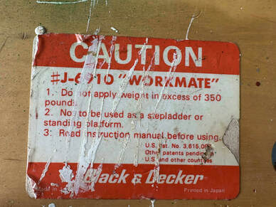
Label says "Made in Japan" at lower left

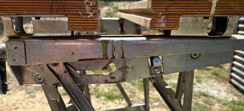
Taller side skirt hides the vise screw; Torx screws attach the H-frames

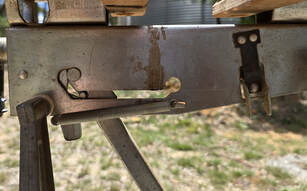
Larger coil spring; Different shape and riveting pattern for the spring-steel catch

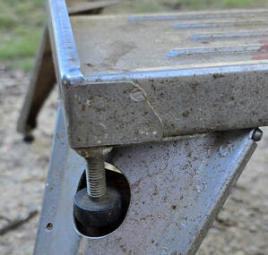
Longer angled tongue wraps around the front; larger diameter M10 stud on foot

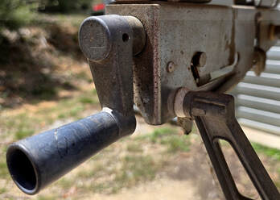
Hollow knob; White plastic bushing; Different shape for the shoulder of the H-frame

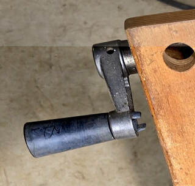
Marbled black plastic snap-in knob
Workmate J6900
The situation for the Workmate J6900 is exactly like that of the J6910 described above—In this case, the J6900 is very nearly a clone of the U.S. model 79-003 Type 1, but again with multiple small changes throughout. As with the J6910, I believe that Black & Decker allowed its facility in Japan to create the J6900 for the Pacific market as a copy of the North American 79-003 Type 1, with changes, to be manufactured in the Japanese factory. I have found vintage advertisements showing that it was sold in Australia and New Zealand. I don't know if it was sold in Japan or elsewhere.
The J6900 was advertised as the "Junior Workmate", reflecting its smaller size and weight. Unlike the dual-height J6910, the legs on the J6900 do not fold to permit a lower working height, and the jaws are about 23" long, 6" shorter than the jaws on the J6910.
The changes that can be seen on the J6900 as compared with the North American 79-003 Type 1 are less extensive than those listed above for the J6910. Much of this is because the J6900 is a simpler model.
The J6900 was advertised as the "Junior Workmate", reflecting its smaller size and weight. Unlike the dual-height J6910, the legs on the J6900 do not fold to permit a lower working height, and the jaws are about 23" long, 6" shorter than the jaws on the J6910.
The changes that can be seen on the J6900 as compared with the North American 79-003 Type 1 are less extensive than those listed above for the J6910. Much of this is because the J6900 is a simpler model.
- The jaws on the J6900 have a double layer of plywood along the edge where the jaws meet, like the J6910. The second layer is absent on the 79-003.
- The J6900 has smaller rubber boot feet than those on the 79-003 Type 1, and it does not have the screw-adjustable foot found on the right rear leg of the 79-003.
- Attached to the lower outside-mounted strut on both the right and left sides of the J6900 is a horizontal metal helper peg that provides a grip to assist with operating the folding mechanism for the frame. I have seen two J6900's with the pegs pointing inward, a result, I believe, of improper assembly.
- The J6900 has crank handles and knobs made of black plastic with hollow centers and "B&D" molded into the hub of the arm. I have seen one with cast aluminum crank arms, but it's possible they were replacements from a J6910. I have seen some with gray knobs on black arms. The 79-003 always has plastic crank-handle arms and knobs that can be either orange or black. The arms on the 79-003 do not have the B&D logo.
- The vise screws on the J6900 have finer threads than those on the 79-003.
- The J6900 has a white label, with one of three styles of black text, on both the front and back lower crossbars.

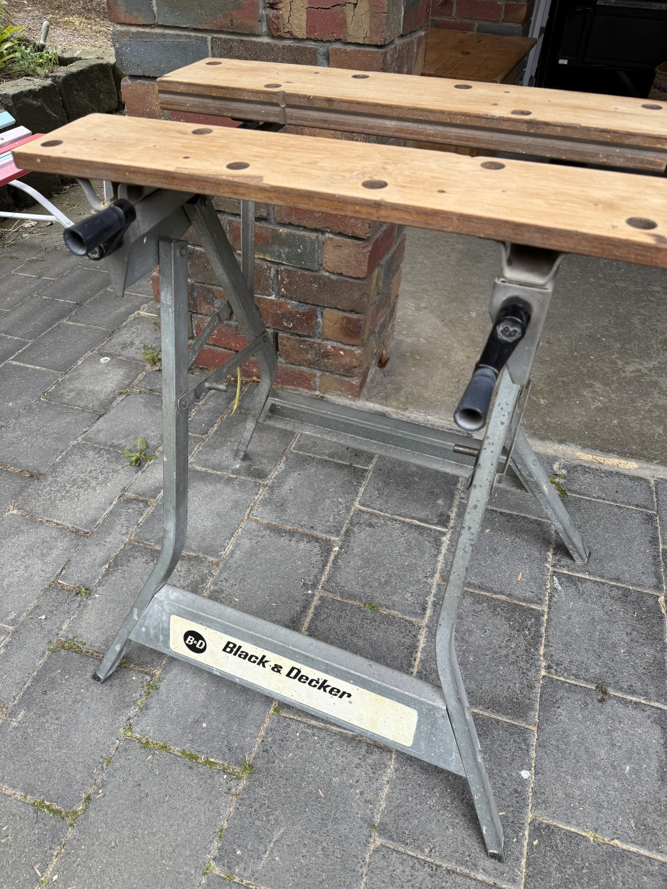
Helper pegs on this one are pointing inward.

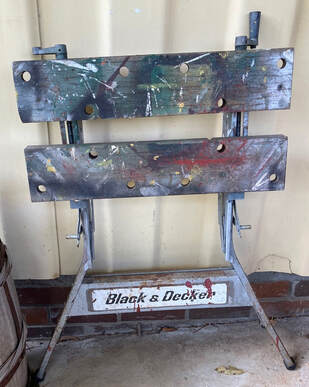
Different style of label, and helper pegs correctly pointing outward

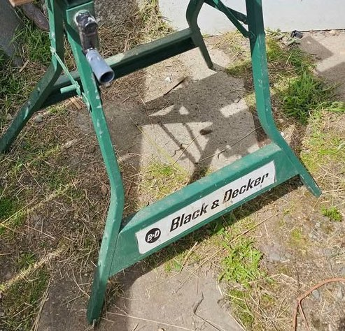
Third label style, painted green (by owner?)

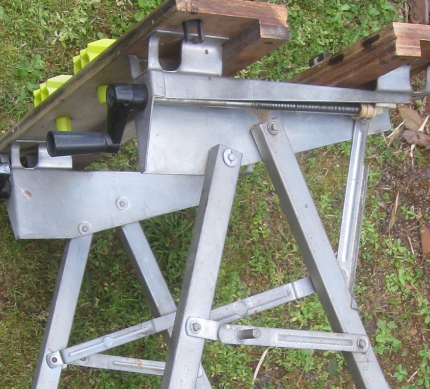
Double-layer jaws, very fine vise threads.
Workmate J6904
I haven't been able to find any published information on the J6904. Unlike the J6900 and J6910, I could not find any Workmate like the J6904 in any Australian newspaper ads. All of the few J6904s I have seen in photos have Japanese labels on both the front and rear crossbars, so I'm presuming that this model was sold only in Japan. It appears to be about the same size as the J6900, of roughly similar design, but built for lighter duty and with almost no shared parts.
The first four characters on the label spell "buradeka", a shortened form of the full phonetic Katana name used for Black & Decker in Japan, pronounced "burakkudekka". The remainder of the label is not phonetic, but simply the word "Kōsakudai" meaning "workbench".
There is no corresponding North American model to compare the J6904 to, so I'll use the J6900 for comparison.
The first four characters on the label spell "buradeka", a shortened form of the full phonetic Katana name used for Black & Decker in Japan, pronounced "burakkudekka". The remainder of the label is not phonetic, but simply the word "Kōsakudai" meaning "workbench".
There is no corresponding North American model to compare the J6904 to, so I'll use the J6900 for comparison.
- The jaws on the J6904 are narrower by about an inch than those on other floor-standing Workmates. From measurements on photos, I estimate they are approximately 4" wide. I estimate their length at the same 23" as the J6900. The 4" maximum jaw opening is the same.
- The J6904 has seven peg holes in each jaw, one more than the J6900.
- The jaws on the J6904 have a single layer of plywood along the edge where the jaws meet.
- The upper right and left vise-screw assemblies on the J6904 have been reduced to the minimum size seen on any Workmate.
- The legs attach to the inner side of the upper right and left vise-screw assemblies on the J6904, rather than to the outer side as on the J6900.
- The struts that support the rear end of the vise-screw assemblies on the J6900 are missing on the J6904.
- The folded-steel brackets used to attach the jaws on the J6904 have a rectangular shape that is unlike any other Workmate.
- The J6904 has the same two styles of crank handles as the J6910.
- The label on the lower crossbar can be either white or orange.

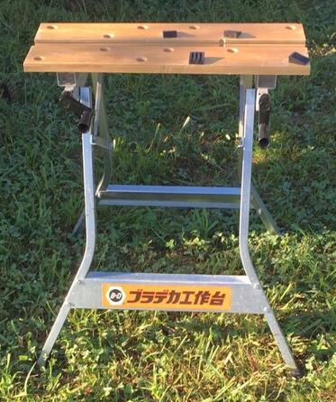
Plastic crank arms

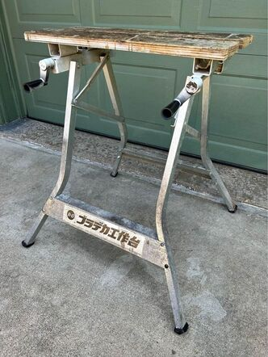
Jaws mounted on rectangular brackets; aluminum crank arms

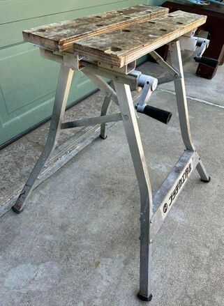
Vise-screw assemblies reduced to the minimum possible size; no rear support strut